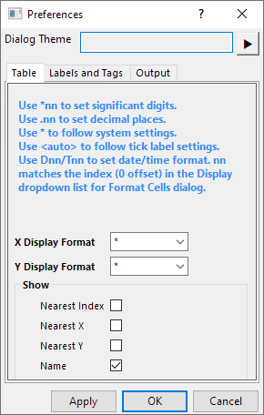
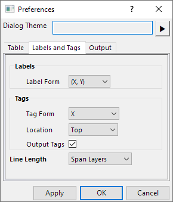
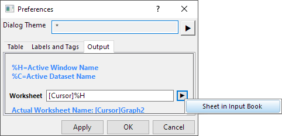

Weitere relevante Videos:Minitool Vertikaler Cursor
Weitere relevante Videos:Minitool Vertikaler Cursor
 Weitere relevante Videos:Minitool Vertikaler Cursor
Weitere relevante Videos:Minitool Vertikaler Cursor
Verwenden Sie das Minitool Vertikaler Cursor, um die X- und Y-Koordinatenwerte für Datenpunkte in Diagrammen mit gestapelten Feldern oder mit mehreren Feldern zu lesen.
Dieses Minitool ist im Menü Minitool verfügbar, wenn ein Diagrammfenster aktiv ist.
|
Seit Origin 2021 gibt es eine Schaltfläche zum Umschalten zwischen Verlinkten Cursor für jeden Layer hinzufügen damit Sie verlinkte Cursor zu allen Layern hinzufügen und die Cursor gleichzeitig verschieben können, um die XY-Koordinaten in jedem Layer einer Grafik mit mehreren Layern abzulesen. |
| Markierung und Beschriftung hinzufügen |
Fügen Sie Markierung und Beschriftungen bei der aktuellen Position für die ausgewählten Zeichnungen hinzu. Die Werte der XY-Koordinate dieser Markierung wird im Ergebnisblatt ausgegeben.
Falls Sie diese Ausgabe beim Klicken auf diese Schaltfläche nicht brauchen, klicken Sie auf die Schaltfläche Optionen, um den Dialog Einstellungen und deaktivieren Sie Markierungen ausgeben auf der Registerkarte Beschriftungen und Markierungen. |
|---|---|
| Beschriftung verbergen | Klicken Sie auf diese Schaltfläche, um festzulegen, ob die Beschriftungen verborgen werden sollen. Hinweis: Nur der X-Wert wird oben/unten im Diagramm markiert, während die Beschriftungen verborgen werden. |
| Alle Infos in einer Beschriftung zeigen/Mehrere Beschriftungen | Die Informationen zu allen Datenpunkten werden in einer Beschriftung gezeigt, oder jede Zeichnung hat ihre eigene Beschriftung. |
| 2. Cursor hinzufügen/2. Cursor entfernen | Klicken Sie auf diese Schaltfläche, um einen zweiten Cursor hinzuzufügen. Der Unterschied zwischen den zwei Cursorn kann berechnet und ausgegeben werden. Klicken Sie erneut auf die Schaltfläche, um den zweiten Cursor zu entfernen. |
| Verlinkten Cursor für jeden Layer hinzufügen/Verlinkten Cursor für jeden Layer entfernen |
Klicken Sie auf diese Schaltfläche, um den verlinkten Cursor zu jedem Layer hinzufügen oder aus jedem Layer entfernen. Wenn der zweite Cursor hinzugefügt wurde, gibt es zwei verlinkte Cursor in jedem Layer. |
|
Schrift vergrößern/verkleinern
|
Die Schriftgröße der beschriftungen wird vergrößert oder verkleinert. |
|
Cursor zu X verschieben
|
Verschiebt den Cursor an die Position, die von dem X-Eingabewert festgelegt wird. |
|
Bericht ausgeben
|
Gibt die XY-Koordinatenwerte, die auf der Registerkarte Cursor aufgeführt werden, in einem festgelegten Arbeitsblatt aus. Beachten Sie, dass durch Drücken der Taste O auch die aktuellen Werte im Arbeitsblatt ausgegeben werden. |
|
Zum Berichtsarbeitsblatt gehen
|
Wechselt zum Berichtsblatt. |
|
Optionen
|
Öffnet den Dialog Einstellungen. |
|
Verknüpfen/Verknüpfung aufheben: Diagramme
|
Klicken Sie auf diese Schaltfläche, um den Diagrammbrowser zu öffnen und wählen und verknüpfen Sie Diagramme mit dem aktuellen Diagramm. |
|
Details verbergen
|
Klicken Sie auf diese Schaltfläche, um die Cursortabelle zu erweitern bzw. zu verbergen. |
Richtet den Cursor am nächstliegenden Quelldatenpunkt in X-Richtung aus.
Diese Tabelle führt die Informationen zu den Schnittpunkten von vertikalem Cursor und Zeichnungen auf.
Diese Tabelle umfasst zwei Kontextmenüs, mit denen Sie die Anzeige von Spalten und Zeichnungen benutzerdefiniert anpassen können.
Klicken Sie mit der rechten Maustaste auf einen Spaltenheader, um ein Menü zu öffnen, mit dem Sie die Spalten auswählen können, die in dieser Tabelle angezeigt werden sollen.
Hinweis: Seit Origin 2021b wurde das Menüelement Legende zur Liste hinzugefügt, damit Sie wählen können, ob die Diagrammlegende in der Tabelle engezeigt werden soll, um die Zeichnungen voneinander zu unterscheiden, falls die Namen der Zeichnungen sich gleichen oder sehr ähnlich sind.
Klicken Sie mit der rechten Maustaste auf den Bereich unter dem Spaltenheader, um ein anderes Menü zu öffnen. Hier können Sie die Daten auswählen, die Sie in die Zwischenlage kopieren möchten. Wählen Sie, welche Diagramme in der Tabelle angezeigt werden sollen, heben Sie die Verknüpfung des verknüpften Diagramms auf und speichern/laden Sie die verknüpften Diagramme.
Klicken Sie auf die Schaltfläche Optionen  , um den Dialog Einstellungen zu öffnen. Dieser Dialog enthält drei Registerkarten:
, um den Dialog Einstellungen zu öffnen. Dieser Dialog enthält drei Registerkarten:
 |
 |
 |
Auf dieser Registerkarte können Sie:
Auf dieser Registerkarte
Legen Sie das Ausgabeergebnisblatt fest:
Wenn Sie den vertikalen Cursor öffnen und eine Markierung zu einem Diagramm hinzufügen, können Sie auf die Schaltfläche  klicken, um den Diagrammbrowser zu öffnen und die Diagramme miteinander zu verknüpfen.
klicken, um den Diagrammbrowser zu öffnen und die Diagramme miteinander zu verknüpfen.
Für den vertikalen Cursor ist im Fenster des Diagrammbrowsers eine zusätzliche Schaltfläche Zuletzt Verwendeten laden verfügbar. Die Diagramme, die beim letzten Mal verknüpft wurden, werden geladen und sind bereit, verknüpft zu werden.
Die Koordinaten aller Datenzeichnungen und verbundenen Diagramme werden angezeigt, sobald der Cursor auf einem Diagramm bewegt wird, wenn die Diagramme bereits miteinander verknüpft sind. Wird eine Markierung zu der Zeichnung mit dem Cursor hinzugefügt oder gelöscht, werden zusätzlich entsprechende Markierungen in den verknüpften Zeichnungen hinzugefügt bzw. gelöscht.
Nachdem die Diagramme miteinander verknüpft wurden, wird ein Symbol  oben rechts in allen Diagrammen eingefügt, um erkennbar zu machen, welche Diagramme miteinander verknüpft wurden. Klicken Sie mit der rechten Maustaste. Ein Kontextmenü wird aufgerufen, mit dem Sie die Cursorlinie steuern können:
oben rechts in allen Diagrammen eingefügt, um erkennbar zu machen, welche Diagramme miteinander verknüpft wurden. Klicken Sie mit der rechten Maustaste. Ein Kontextmenü wird aufgerufen, mit dem Sie die Cursorlinie steuern können: